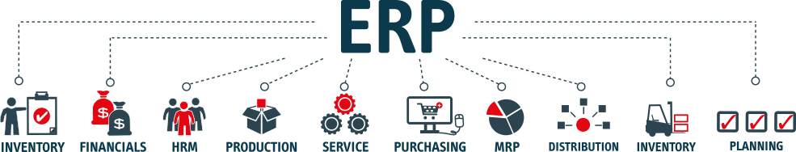

- 저렴한 비용으로 기업 정보과 조기 구축가능.
- 사업내용에 따라 쉽게 전환이 가능, 경쟁력 제고에 기여.
- NT@C-ERP는 기존 정보시스템을 개발하여 구축하는 것보다 초기 구축비용이 60~90% 절감.
- IDC의 보안 및 백업을 이용, 인프라에 대한 위험요소를 현저히 줄일 수 있습니다.

- 시스템 관리 및 업그레이드 불필요.
- 전사나 전문인력 확보 없이 최고의 솔루션 이용가능.
- 소프트웨어, 하드웨어에 대한 별도 관리 불필요.
- 언제 어디서나 ASP제공 서비스를 선택하여 이용가능.
- 자신의 시스템 환경에 맞게 데이터 통합관리 가능.
- S/W 구입이 필요 없어 기업 총소요비용(TCO)이 절감.
- 회사규모나 전산환경의 변화에 상관없이 주력사업에만 집중가능.
- 철저한 보안 및 백업서비스.

NT@C-ERP
는 기존 정보시스템을 개발하여 구축하는 것보다 초기 구축비용이 60~90%를 절감 할 수 있습니다. 따라서 IT시스템을 구축하려는 기업들의 과도한 초기 비용 부담을 줄일 수 있으며 IDC의 보안 및 백업을 이용한 NT@C-ERP 서비스는 인프라에 대한 위험 요소를 현저히 줄일 수 있습니다.

- 회계관리
- 전표발생처리에서 결산업무까지 회계처리업무를 쉽게 처리할 수 있으며 매입, 매출, 자금, 급여 관리업무에서 처리된 거래내역이 자동전표 처리되어 회계업무에 반영되므로 전표 처리 업무를 감소 시켜주는 효과가 있으며 시간과 장소에 구애 받지 않고 회계장부내용을 활용할 수 있으므로 회사의 이익실현에 기여.
- 생산관리
- 생산계획에 의한 작업지시, 생산실적, 생산입고, 외주입고관리를 통한 물류관리 및 생산실적을 분석하는 업무.
- 자금관리
- 자금항목의 입출금관리, 어음관리 등을 통하여 현금 및 예금시제를 즉시 파알할 수 있으며 매일매일 자금현황을 검색하여 기업경영에 신속하게 대응 할 수 있는 시스템이며, 자금 입출금 내역을 바로 회계장부에 반영되므로 이중처리를 방지 할 수 있는 시스템.
- 인사급여관리
- 정직원 및 임시 직원의 기본 인적사항 및 급여/상여 계산, 4대보험 및 갑근세 신고자료 등이 제공되므로 임직원의 현황을 신속하게 파악할 수 있도록 기여하는 시스템.
- 예산관리
- 예산을 수립하여 예산을 집행할 때 전표관리를 통하여 통제하는 행위와 예산계획대비 실적관리를 통하여 기업경영을 강화하는 업무.
- 원가관리
- 품목별 거래처별 제조원가 매출원가 총원가를 계산하여 이익율을 분석하여 회사 경영실적분석 및 계획수립에 기여하는 업무.
- 경영관리
- 회사전반적인 경영상태를 요약하여 제공하므로 경영자는 의사결정 자료로 활용할 수 잇는 시스템제공, 매출현황 및 추이, 채권/채무현황, 자금수지현황, 손익분석현황 및 추이, 주요품목 손익실적 및 추이 등을 제공하는 시스템.
전표처리
매출, 수금, 매입, 지급, 어음사후처리, 매출원가, 급여전표 등 타업무에서 자동 연계처리.
발생부서에서 회계전표를 등록, 회계담당자가 확인/승인 기능과 승인단계 없이 한번등록으로 처리하는 2가지 기능.
결산관리
전표등록으로 바로 재무제표 즉 월계표, 시산표, 대차대조표, 손익계산서 등 각종 보고서 조회가 가능.
재무관리
매입, 매출자료를 근거로 월별 또는 분기별로 집계 조정하여 매출처, 매입처 별 전자 신고 및 명세서 출력이 가능.
각종 세무서식명세서 출력 가능.
고정자산관리
고정자산의 취득, 감가상각 산출, 감가상각 전표처리, 고정자산 결산장표 등의 관리가 가능.
생산계획
생산계획관리.
판매계획에 의한 생산계획수립.
주문에 의한 생산계획 수립.
PDM관리
작업장관리.
작업공정관리 및 BOM관리.
생산실적관리
생산지시-> 생산실적->생산입고.
생산실적통계관리.
외주입고관리
외주실적관리.
외주자료관리.
제예금관리
제예금 정보를 관리하는 기능.
수금사후관리
수금한 받을어음을 만기일전 할인처리, 만기일 도래 시 만기결제처리, 부도 시 부도처리 하는 기능.
신용카드로 수금한 카드전표를 카드사별로 청구, 입금관리 기능(카드사별 자동청구 기능).
지급사후관리
외상매입대금으로 지급한 지급어음의 만기처리.
자금관리
자금일보기능.
품목분류 몇 매출/수금 종합 현황 기능.
매입매출 거래처 원장 기능.
기타관리
자금일보기능.
어음,수표용지 번호관리 기능.
입금표 용지 번호 관리 기능.
인사관리
인사기본사항, 가족사항, 경력사항, 자격면허사항, 병역사항, 추천/조증사항, 어학능력, 학력사항 등 인사정보 관리 기능.
급.상여관리
인사기본사항, 가족사항, 경력사항, 자격일근태, 월근태 관리기능.
전사공통수당 및 공제정보를 관리하는 기능과 개인별 수당 및 공제정보를 관리하는 기능.
급호 테이블에 의한 방식과 월정액에 의한 방식 2가지 기능.
급.상여명세서를 각 개인의 e-mail로 자동발송하는 기능.
면허사항, 병역사항, 추천/조증사항, 어학능력, 학력사항 등 인사정보 관리기능.
연말정산관리
종전 근무지 급여관리 기능
연말정산기능.
퇴직정산관리
추정퇴직금 산출 기능.
퇴직금정산 기능.
예산수립
예산계획을 등록.
과거실적에 의한 계획을 수립.
예산통제
회계전표관리에 의한 잔액통제의 옵션화.
연간예산, 실행예산, 추가예산, 항목변경예산 관리의 강화.
원가기준정보
C/C코드관리, 원가코드관리.
공통비 안분관리.
수불부 집계 및 재고금액계산
자재수불부.
제상품수불부.
원가계산
제품별 제조원가 금액계산.
제상품매출원가계산.
판관비 등 안분 계산.
원가 및 손익 분석
원가 및 손익분석.
제품별 재료비 투입분석.
제상품별 손익분석.
매출거래처별 손익분석.
영업담당자별 손익분석.
목표대비실적분석
매출 및 수금에 대한 목표 대비 실적을 담당자별, 유통별, 담당자-유통별로 분석이 가능.
매입 및 지급에 대한 목표 대비 실적을 거래처별로 분석이 가능.
생산목표대비 실적을 품목분류별로 분석 가능.
손익추이분석
부서, 담담자, 거래처별 분석기능.
품목별 추이분석 기능.
경영지표분석
제품별 제조원가 금액계산.
요약 손익계산서 추이분석.
요약 대차대조표 추이분석.
원가분석
제품별 원단위 제조원가 추이 분석.
품목, 품목그룹별 재고 추이 분석.
부서별 인건비 추이 분석.
부서, 계정별 비용 추이 분석.
Portfolio


종합, 조직별 또는 대리점별 등 실적정보.


.


{kind=link}